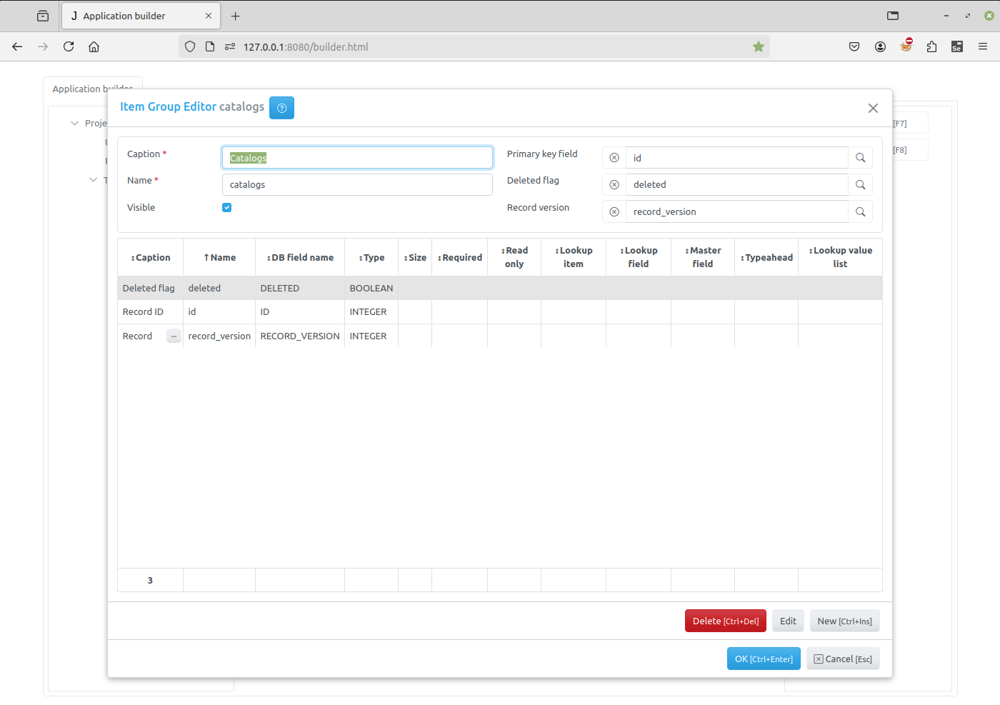

Common fields¶
Items that have access to the database data can have common fields. They are defined in the group they belong to:
Here two fields are defined: id and deleted.
The id field is set as a primary key and will store a unique identifier for each record in the database table. This value is automatically generated by the framework when inserting a new record into the table.
The deleted field is set as a deletion flag. When the ‘Soft delete’ check-box is checked in the Item Editor Dialog, the delete method does not erase a record physically from the table, but uses this field to mark the record as deleted. The open method takes this into account when an SQL query is generated to get records from the database table.
The Record version field is used for Record locking.